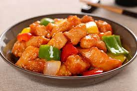

Cerdo Agridulce

Descripción
El cerdo en salsa agridulce (咕噜肉) es una receta emblemática de la cocina china cuyo origen es antiguo pero cuyos ingredientes han evolucionado.
Hoy en día, la popularidad de este plato es tal que la carne de cerdo agridulce puede encontrarse en todos los restaurantes chinos del mundo.
En Hong Kong, el cerdo agridulce se considera un plato sencillo asociado a la comida rápida y a la comida callejera. En el resto de China, se puede encontrar en los restaurantes de té y en los restaurantes tradicionales.
Ingredientes
-
500 g de lomo o solomillo de cerdo cortado en dados de 2,5 cm,
4 cucharadas de maicena.
-
Para la marinada:
2 cucharadas de aceite de cacahuete o de soja,
1 huevo batido en forma de tortilla,
½ cucharadita de sal.
-
Para la salsa:
3 cucharadas de ketchup,
4 cucharadas de vinagre de sidra de manzana,
2 cucharadas de vino Shaoxing,
4 cucharadas de azúcar moreno,
2 cucharaditas de maicena,
½ cucharadita de sal.
-
Para el salteado:
125 ml de aceite de soja o de cacahuete,
½ pimiento rojo cortado en tiras,
½ pimiento verde cortado en tiras,
½ pimiento amarillo cortado en tiras,
3 tallos de cebolleta cortados en rodajas,
3 dientes de ajo picados.
Pasos para la preparación
-
Combinar los trozos de cerdo, el aceite y la sal en un bol.
Mezclar bien y dejar marinar durante 15 minutos mientras se preparan los demás ingredientes para la salsa.
Mezclar todos los ingredientes de la salsa en un bol y reservar.
-
Añadir el huevo batido al bol de la carne de cerdo. Remover para mezclar bien.
Añadir las 4 cucharadas de maicena. Remover para cubrir la carne de cerdo.
Calentar el aceite en una sartén de fondo grueso a fuego medio-alto hasta que empiece a humear.
Añadir la carne de cerdo de una vez y repartirla en una sola capa sobre la superficie de la sartén.
-
Separar los trozos de cerdo con unas pinzas o palillos.
Cocinar sin tocar la carne de cerdo durante 3 minutos, o hasta que la parte inferior esté dorada. Gire para dorar el otro lado, de 2 a 3 minutos.
Pasar la carne de cerdo a un plato grande y retirar la sartén del fuego. Dejar enfriar durante 3 minutos.
Añadir el cebollino y los dientes de ajo. Rehogar, removiendo, hasta que esté fragante, durante unos segundos.
-
Añadir los pimientos y saltear durante 5 minutos a fuego fuerte, removiendo constantemente.
Remover de nuevo los ingredientes de la salsa reservados para disolver completamente la maicena. Vierta la mezcla en la sartén.
Remover y cocinar hasta que la salsa espese.
Añadir la carne de cerdo cocida y revolver para cubrirla con la salsa, unos 30 segundos.
Servir inmediatamente con arroz blanco al vapor.